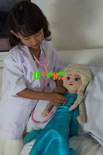

Bermain peran atau permainan berpura-pura, sangat lazim di lakukan oleh anak-anak usia Balita,
Bermain peran banyak sekali manfaatnya, mereka bisa mempelajari peran disekeliling mereka.
Saat bermain anak akan mengembangkan kemampuan imajinasi, kreatifitas, intelektual, kosakata
dan rasa empati.

Salah satu permainan yang paling senang dimainkan anak-anak adalah permainan dokter-dokteran.
Bermain dokter-dokteran banyak manfaat positifnya untuk Anak loh Bun, seperti :
1. Anak lebih koorperatif saat ke Dokter
Anak-anak Balita sering sekali takut ke dokter, hal ini disebabkan karena banyak imunisasi
yang dilakukaan saat mereka Bayi, mereka mampu mengingat bahwa setiap kedokter akan berakhir
dengan suntikan yang menyebabkan mereka trauma. Saat bermain peran dokter-dokteran kita bisa
menjelaskan bahwa sangat penting dilakukan pemeriksaan kesehatan dan pentingnya imunisasi bagi
Anak.
kita jelaskan prosedur-prosedur yang dilakukan seorang dokter saat memeriksa kesehatan
seperti, Pemeriksaan tinggi dan berat badan, pemeriksaan mulut, hidung, telingga, detak jantung
dan memeriksa bagian yang sakit, berpura-pura membuat resep dan meminta kita patuh untuk meminum
obat. Sehingga saat ke Dokter anak-anak lebih koorperatif karena sudah tau prosedur-prosedur apa
saja yang akan dilakukan oleh dokter.
2. Anak tidak panik saat terjadi kecelakaan
Anak-anak sering kali jatuh dan terluka, untuk itu kita bisa ajarkan anak-anak bagaimana
cara membersihkan luka, menghentikan pendarahan kecil, memberikan obat luka dan membalut
luka. lalu segera menginformasikan ke orang dewasa terdekat mereka, sehingga anak terlatih
untuk tidak panik saat terjadi kecelakaan.
Dengan bermain peran kita bisa mengajarkan anak Pelajaran Pertolongan Pertama pada kecelakaan
dengan cepat dan tepat sebelum dibawa ke tempat rujukan.
3. menambah kosakata dan mengembangkan kemampuan komunikasi
Dengan belajar dokter-dokteran anak-anak akan belajar kosakata baru, kita ajarkan mereka
untuk mengenal angggota tubuh, organ-organ tubuh, peralatan kedokteran dan kegunaannya. Dengan
meningkatnya kosakata Anak, kita pancing mereka untuk melihat masalah-masalah yang ada, dan
memberikan solusinya sehingga secara tidak langsung Anak akan meningkat kemampuan berkomunikasinya.
Dengan bermain peran membantu perkembangan intelektual anak.
4. melatih kemampuan menulis dan mengeja
Kita minta mereka untuk membuat resep Dokter sehingga mereka akan belajar menulis dan mengeja
nama-nama penyakit dan nama-nama obat.
5. Mengajarkan Anak untuk berempati kepada orang sakit.
dengan bermain dokter-dokteran Anak akan mempunyai empati kepada orang sakit, anak belajar
mengetahui apa saja yang bisa kita lakukan untuk menolong dan meringankan si penderita,
Untuk bermain peran bersama si buah hati sebagai Dokter gunakan kostum Baju Dokter dan tambahkan
Stetoskop ekonomis yang keren. Langsung saja menghubungi KostumPro di Telp/SMS/
WA 0858-9245-6044.
Lihat Baju Dokter Kecilnya di Sini